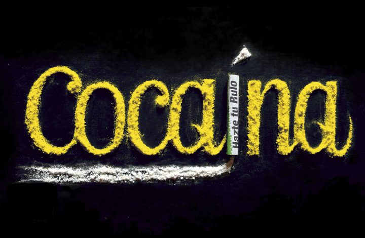

Cocaína
Sustancias Principales

Descripcion de cocaina
Es el principal alcaloide de un arbusto denominado Erithroxylon coca, que se cultiva en la zona occidental de América del Sur (Colombia, Perú y Bolivia). El arbusto tiene una corteza rugosa de color pardo rojizo, puede llegar a alcanzar hasta los seis metros de altura en las condiciones más favorables, aunque en la actualidad no dejan que sobrepase los dos metros con el fin de facilitar su recolección.
La hoja de coca es la única parte que contiene cocaína, está dispuesta en grupos de siete aproximadamente en cada tallo.
Su sabor es amargo, produciendo en la lengua una ligera sensación de embotamiento o anestesia local. En países andinos se utiliza para soportar lcos inconvenientes de las grandes altitudes, el hambre y las fatigas, mascando estas hojas junto con una pequeña piedra caliza o polvo de cal que aumente la salivación, aunque en estudios se ha demostrado que esto no es eficaz fisiológicamente, ya que la cantidad de cocaína ingerida con la masticación de sus hojas es mínima y sus efectos podrían compararse a los de dos tazas de café (Phillips J, R.D. Wynne, 1980).
Sulfato de coca o pasta base: también llamado basuko, baserolo o suzuki. El proceso de elaboración se realiza en las inmediaciones de la plantación, principalmente por no desplazar grandes cantidades de hoja de coca, ya que para obtener un kilo de pasta se necesitan alrededor de 125 kilos de hoja. Esta pasta se obtiene, primero mezclando la hoja triturada con agua y queroseno; después se separa el queroseno y de desecha la hoja de coca, se agrega agua más ácido sulfúrico, después de filtrado se mezcla con cal o amoniaco, el secado de esto da lugar a la pasta de coca. Su aspecto es de una pasta parda negra, fumable que ocasiona complicaciones tóxicas debido al plomo de los componentes utilizados en el proceso de elaboración.
La cocaína base: también denominada free-base o base libre, proviene de la mezcla de la pasta de coca con eter, al evaporarse con calor aparecen unos cristales casi puros de cocaína base muy potente, en ambientes marginales se denomina crack, se llama así porque hace un sonido de crujido cuando se calienta, su aspecto es parecido a la porcelana, y triturado asemeja a escamas de jabón. Se fuma mezclado con el tabaco o se calienta en pipa de agua y se inhala el humo resultante.
La cocaína: es el clorhidrato de cocaína, obtenido a partir de la pasta base, con clorhídrico y extracción acetona etanol.
Se trata de un polvo blanco, cristalino y de sabor amargo, en ambientes callejeros se denomina: nieve, coca o farlopa.
Efectos deseados
- Euforia y exaltación del estado de ánimo.
- Ausencia de fatiga, de sueño y de hambre.
- Disminución de las inhibiciones, por lo que la persona suele percibirse como alguien sumamente competente y capaz.
- Aceleración del ritmo cardíaco y aumento de la presión arterial.
Duracion
Cuando se esnifa, los efectos aparecen a los pocos minutos y duran entre 30 y 45 minutos, si bien la estimulación puede alargarse hasta una hora u hora y media
Riesgos
El consumo de cocaína puede provocar fatiga, irritabilidad, pérdida del apetito, insomnio, ansiedad, dolor abdominal y muscular, náuseas ó vómitos, reducción de la libido e irregularidades en la menstruación.
Después de consumir (al día siguiente o posteriores), se puede experimentar apatía, cansancio y tristeza (bajón). En general, es proporcional a la dosis consumida, aunque algunas personas son más susceptibles a estos efectos.
Recomendaciones de Reducción de Riesgos del consumo de cocaína
-
Cuidado con la cantidad que vayas a tomar
Tomar más cocaína de la cuenta puede hacer que acabes con demasiada estimulación y desaparezcan los efectos buscados. Esto puede ocurrir si dejas pasar poco tiempo entre raya y raya, si te las pones demasiado grandes o si eres muy sensible a los efectos, por lo que necesitarás menos cantidad que otras personas.
-
Cuida tu nariz
El hecho de esnifar puede provocar lesiones en las fosas nasales como sinusitis (inflamación de la mucosa que cubre los senos paranasales), rinitis (inflamación de la mucosa de las fosas nasales), hemorragias nasales y, en el caso de un uso continuado, ulceraciones y perforaciones del tabique nasal. Por otra parte, algunos estudios sugieren que compartir el turulo puede ser un factor de riesgo para la transmisión del Virus de la Hepatitis C.
-
Evita tomar con frecuencia
La mayoría de personas que toman cocaína lo hacen de forma ocasional. Sin embargo, hay algunas que acabarán desarrollando un consumo problemático y les será difícil mantener el control. Esto es más probable que ocurra si el tomar cocaína se vuelve habitual y/o se comienzan a utilizar otras formas de administración (como la fumada o inyectada).
Leyes y cocaina
Los problemas con la justicia son un riesgo importante relacionado con las drogas por lo que es fundamental que cualquier persona usuaria de las mismas conozca la legislación en la materia a fin de minimizar dicho riesgo. Tómate tu tiempo para leer con calma la información sobre leyes y drogas.